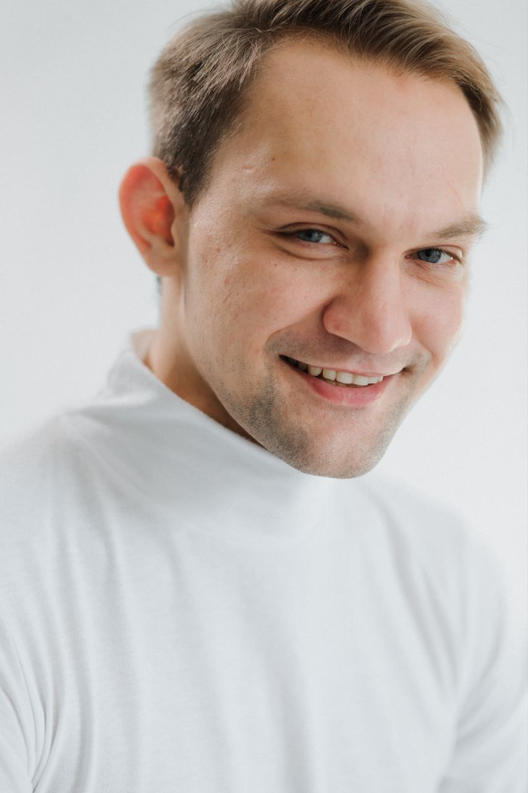

Антон Шпигоцкий
Антон Шпигоцкий — основатель и руководитель студии Shpigotskiy Art Space, профессиональный актёр и педагог актёрского мастерства и ораторского искусства. Действующий актёр Областного русского драматического театра им. Николая Погодина.
Прошёл путь от подготовительных курсов в театральных школах Санкт-Петербурга и Москвы до одного из ведущих театральных вузов страны, а сценический опыт получал на подмостках московского Малого театра. Помогает раскрыться и детям, и взрослым — ставит голос, речь и уверенность в себе, работает со стеснительностью и страхом сцены.
- 2015 — подготовительные курсы актёрского мастерства, СПбГАТИ (Санкт-Петербург)
- 2016–2017 — Lyskov Acting Studio, Москва
- 2017–2021 — Высшее театральное училище им. М. С. Щепкина, окончил с отличием
- 2018–2021 — сценическая практика в Малом театре, Москва
- 2021–2022 — мастер-классы по озвучанию и дубляжу у Всеволода Кузнецова
- с 2022 — актёр Областного русского драматического театра им. Николая Погодина
Первая попытка открыть студию была в 2023 году — на базе студии эстрадного вокала, параллельно с работой в театральной студии при театре им. Николая Погодина. В марте 2024 года открылась театральная студия Shpigotskiy Art Space. Первые месяцы занимались только актёрским мастерством и, приглашая детей через школы, набрали около 45 учеников от 4 до 16 лет. Летом 2024 года открылись первые группы по гитаре и укулеле, живописи и современному танцу — так студия выросла до пяти направлений.
Георгий Захаров
Георгий пришёл к музыке в 2014 году и прошёл весь путь освоения инструмента самостоятельно — от первых аккордов до уверенного владения разными техниками игры. Именно поэтому он как никто понимает каждого новичка: он точно знает, с чего начать, где обычно «застревают» и как двигаться дальше без скуки и зубрёжки.
На занятиях Георгий делает обучение понятным, интересным и доступным для ученика любого возраста и уровня подготовки. Кроме гитары он обучает игре на укулеле и домбре, помогает разобрать любимые песни и постоянно расширяет музыкальный кругозор учеников.
Его главное убеждение: научиться играть на гитаре может каждый — нужны лишь правильный подход, регулярная практика и искренний интерес к музыке. И собственная история Георгия — лучшее тому доказательство.

Виталий Жуков
Виталий — редкий по широте музыкант, профессионально владеющий более чем тридцатью инструментами: от гитары, укулеле и фортепиано до экзотических варгана, ханга, колёсной лиры, сякухати и домбры. Многие из них он освоил самостоятельно — живое доказательство того, что музыке можно научиться в любом возрасте. Играл в различных музыкальных коллективах и группах.
Помимо музыки, Виталий — профессиональный художник и скульптор с академическим образованием. Его работы выставлялись более чем на ста выставках на территории Казахстана и ближнего зарубежья.
В студии Виталий ведёт гитару и укулеле, увлекательно раскрывая ученикам огромный мир музыки и находя подход к любому возрасту и уровню.
- 2000–2004 — Школа одарённых детей (ШОД), специальность «Живопись»
- 2004–2008 — Петропавловский колледж искусств, «Художник-преподаватель»
- 2008–2014 — ОмГПУ, специальность «Скульптура»
- 2012–2014 — ОмГПУ, магистратура «Искусствовед-критик»
Наталья Николаевна Ерзакова
Наталья Николаевна — педагог высшей квалификационной категории и наставник, посвятивший музыкальному образованию более полувека. Выпускница Казанского государственного института культуры по специальности «Хоровое дирижирование», она в совершенстве владеет методикой постановки голоса, развития музыкального слуха и подготовки юных артистов к сцене.
Автор методических пособий по развитию музыкальных способностей детей и обучению хоровому пению. Бережно и терпеливо раскрывает голос каждого ребёнка — даже самого стеснительного — и прививает любовь к музыке, которая остаётся с учениками на всю жизнь.
Педагог живописи
Художник и педагог с академическим образованием в области изобразительных искусств. Работает во всех основных техниках: карандаш, акварель, акрил, масло.
Особый талант — раскрыть творческий потенциал в детях, которые считают, что «не умеют рисовать». Ежегодно организует выставку работ учеников.
Педагог театра
Профессиональный актёр и режиссёр с семилетним опытом работы с детскими театральными коллективами. Ставил спектакли на сценах областного театра и городских культурных центрах.
Специализируется на работе со стеснительными детьми — помогает раскрыться и почувствовать вкус к публичным выступлениям.
Педагог по танцам
Профессиональный хореограф, участница городских и региональных танцевальных фестивалей. Обучалась на семинарах ведущих хореографов Казахстана и России.
Работает с детьми с 5 лет и взрослыми. Создаёт постановки для отчётных концертов и конкурсных выступлений студии.